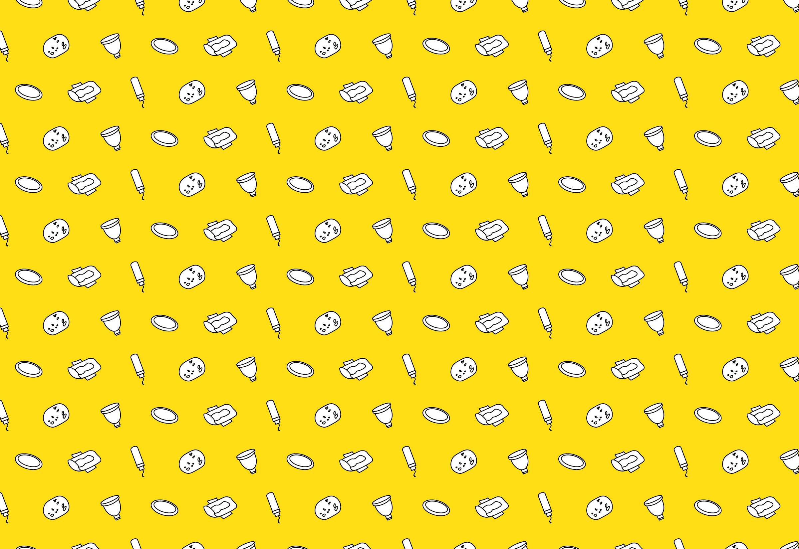
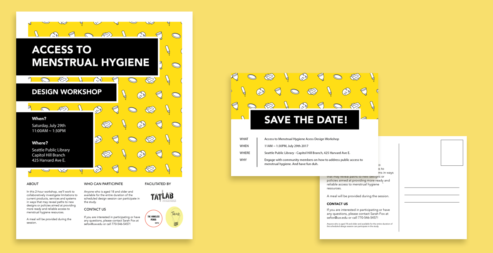
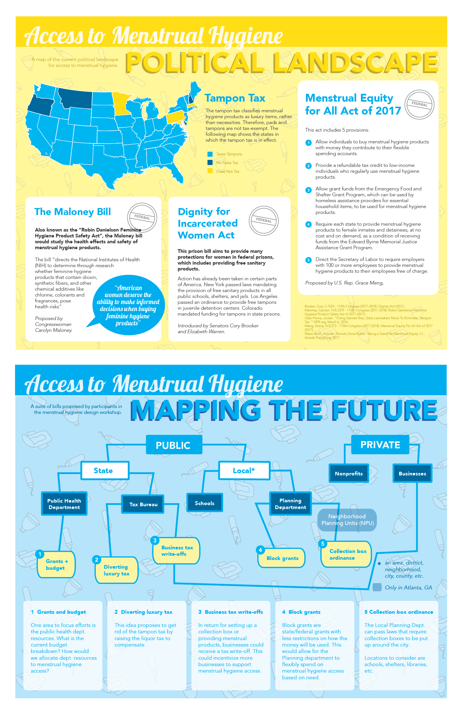
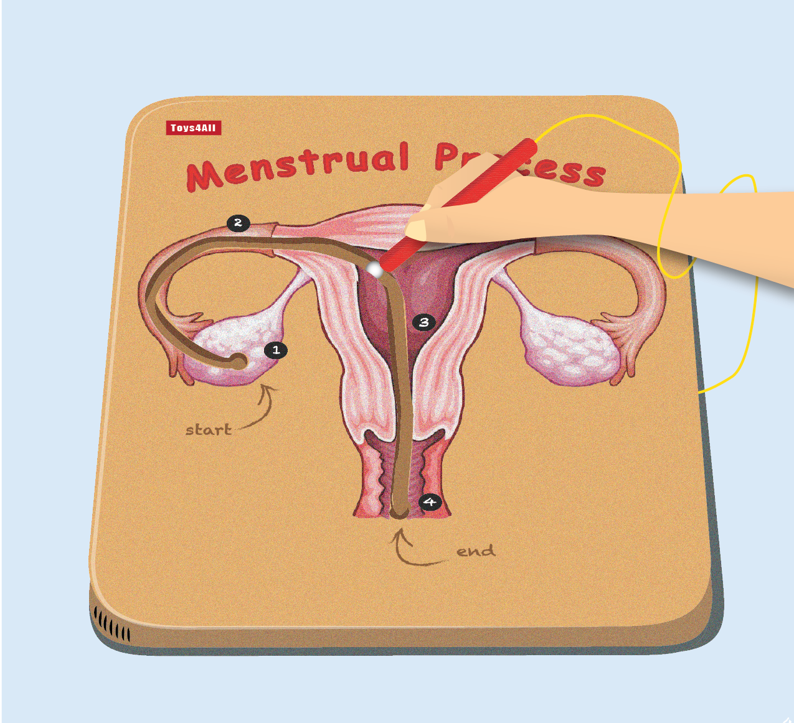
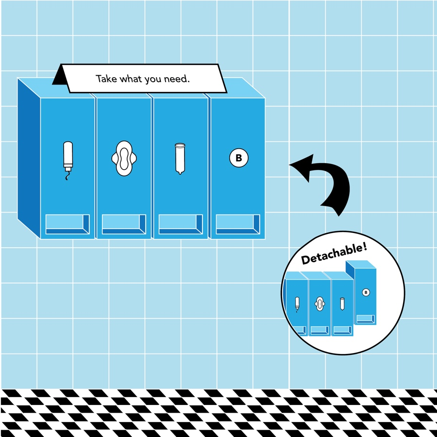
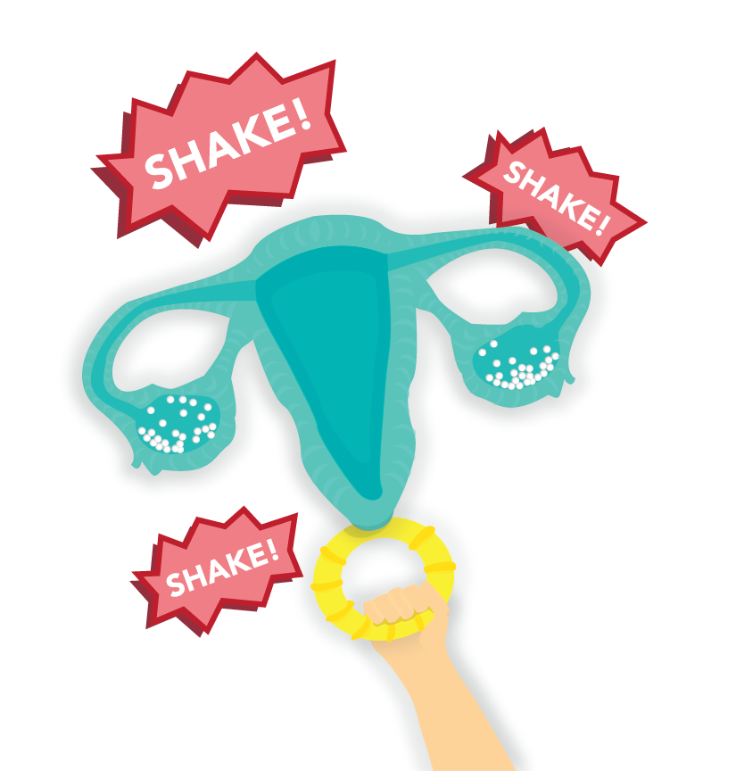
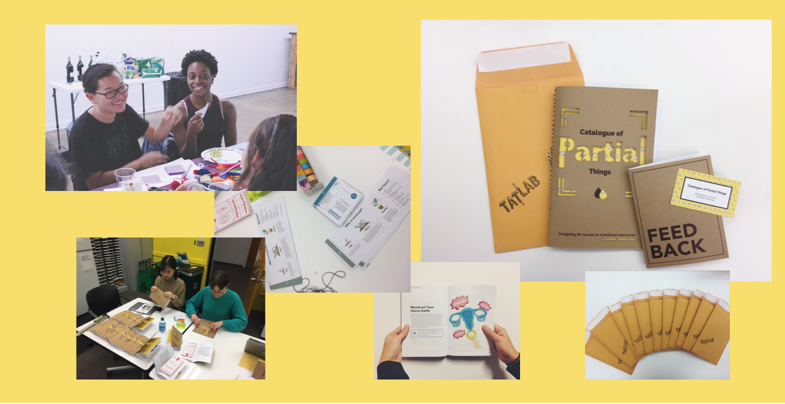

About
With this catalogue, we share a series of ideas that have developed over the course of several design workshops on the topic of Maintaining the Menstruating Body. During these meetings, a group of health workers, activists and community members worked together to collaboratively investigate limitations to current products, services and systems in ways that may reveal paths to new designs or policies aimed at providing more ready and reliable access to menstrual hygiene resources.

Planning
During the initial workshop planning phase, my primary role was to craft the project's visual identiy. To do so, inclusion became the largest consideration. How can we invite our audience to engage in a taboo topic that can be uncomfortable to talk about? One result of this is the menstrual pattern, designed to be gender neutral, fun, warm and welcoming. The pattern found its way into outreach and workshop materials, making it a versatile asset to use throughout the project's entirety.

Prototyping
Low fidelity ideas and concepts emerged from the 4 workshops. After each workshop, our team's job was to further develop these ideas in a higher fidelity form. Here, I gained a lot of experience rapid prototyping as well as how to structure my workflows. The process was iterative and required several feedback cycles.
Here are some prototypes featured in the catalogue.




Future
The catalogue will be distributed to workshop participants. We view the catalogue as a living object, not only meant to share ideas but for others to engage and build upon them as well.

I designed and coded the informational website for this project.